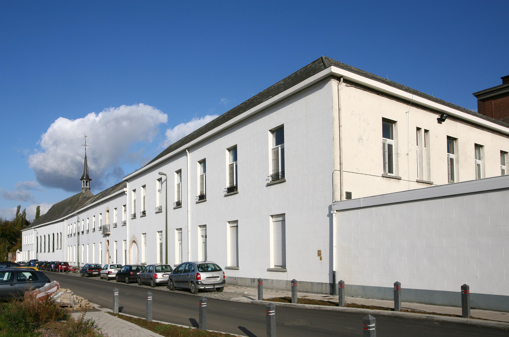

Mysterieuze moord in Melsbroek
Een lijk in eenen kloosterkelder

Het geheim van Melsbroeck
In de zomer van 1894 verschenen er eensklaps artikelen in de kranten over het Geheim van Melsbroeck. De Courier de Bruxelles bracht naar verluid als eerste het nieuws, al hebben we tot op heden geen exemplaar van die krant op de kop kunnen tikken. Over het ganse land, van Gent en Antwerpen tot Geel en Hasselt, namen kranten de berichten over (1, 2, 3, 4, 5, 6 en 7).
Het begon blijkbaar allemaal op zaterdag 14 juli 1894.
Het parket van Brussel, zegt de Courrier de Bruxelles, is met het onderzoek begonnen van eene afscbuwelijke misdaad, welke reeds over1 vier jaren gepleegd is. Zij had plaats te Melsbroeck gelegen op den weg naar Haecht, en werd eerst verleden zaterdag ontdekt.
De patattenkelder
Welgezind en vol goede moed, hun schuppen nonchalant over de schouders, stapten de mannen die zaterdag richting de kelders van het klooster.
De Zusters Ursulinnen van Melsbroeck besturen aldaar eene kostschool, die een groot getal leerlingen telt. Het gesticht is gelegen op eenigen afstand van de kerk. Buiten bevindt zich eene reeks kelders,ten gebruike van het klooster, doch hebbende met hetzelve geene gemeenschap. De deuren dier kelders komen uit langs den straatweg. Een dezer kelders diende uitsluitelijk voor het bewaren en verschouden van moesgewassen2 gedurende den winter en te dien einde was de vloer ervan bedekt met eene laag grond van omtrent 60 centimeters dik. Dit was al zoo sedert verscheidene jaren; maar over eene maand besloot de overste van het klooster den groentekelder tot aardappelkelder te bezigen en, daar deze op den blooten vloer kunnen liggen, moest de laag aarde weggenomen worden. Met dit werk werden verledene week de werkliê gelast. Doch nauwelijks hadden zij eenige schuppen diep gegraven, of hunne werktuigen ontmoetten een lijk, of liever een geraamte, daar het lijk reeds zoover ontvleescht was, dat men zelf het geslacht niet meer herkennen kon.
Zo snel als hun holleblokken3 hen konden dragen, liepen ze terug naar het klooster om moeder-overste op de hoogte te brengen van hun akelige vondst. Moeder-overste, ongetwijfeld na het slaan van meerdere kruistekens en met meerdere ocheren and ochgotten (of eerder iets gelijkaardig in het Frans), bracht meteen mijnheer baron op de hoogte. De baron, Albert Snoy4, was immers ook burgemeester.
De moeder-overste werd geroepen en met de zaak bekendgemaakt en deze verwittigde onmiddellijk den burgemeester baron Alb. Snoy. Deze verwittigde het parket van Brussel, dat aanstonds ter plaatse kwam.
Een vijfkoppige delegatie stapte af.
M. le juge d’instruction de Cambry de Baudimont s’y rendit avec son greffier, M. Morette, M. Banoint, subsitut du procureur du Roi et MM. Vleminckx et Lebrun, médecins-légistes.
Op het ogenblik dat de wetsdokters het lijk, of beter het geraamte, wilden wegnemen, “viel het in brokken uiteen”. De artsen konden zelfs het geslacht van de overledene niet vaststellen. Het enige wat ze konden zeggen was dat het overlijden zo’n 4 of 5 jaar voordien moest hebben plaatsgevonden.
Wie was dit geheimzinnige lijk?
Vermist
Een buurtonderzoek werd opgestart.
Met hulp des burgemeesters werden talrijke getuigen ondervraagd, om te weten wie de doode wel zijn kon. En men ontdekte, of liever men herinnerde zich dat over een jaar of vier een meisje van rond de 30 jaar spoorloos verdwenen was, in tamelijk geheimzinnige omstandigheden. Het was eene juffer Teugels, eene half onnoozele, die met hare tante te Melsbroeck woonde. Den 30 juni 1890 had dit meisje hare woning verlaten om naar de mis te gaan, en sindsdien zag men haar niet meer weêrom. Mej. Teugels is ongetwijfeld het slachtoffer van eenen moord, na vooraf misschien andere mishandelingen ondergaan te hebben.
Daarnaast leren we dat
“het onderzoek heeft doen vaststellen dat het slachtoffer geene kloosterlinge zijn kan. Al de zusters die vijf jaar geleden in ’t klooster waren, zijn nog in leven.”
Vrij snel had men dus een vermoeden wie het slachtoffer zou kunnen zijn.
Na zich met het slachtoffer te hebben beziggehouden, was het natuurlijk zake voor het parket, den waarschijnlijken plichtige op te zoeken. Dit zou moeielijker zijn.
Verdacht
De onderzoeksmagistraten vestigden hunne aandacht op een gewezen werkman van het klooster, de genaamde M., die destijds gelast was met het verzorgen en kelderen der groenten. Nu schijnt het stellig dat M., al is hij de moordenaar niet, toch met de misdaad niet geheel en al onbekend kan zijn. Drie jaren geleden nam hij als vrijwilliger dienst in een linieregiment, thans in garnizoen te Aarlen, waar hij door de gendarmen, op bevel van het parket aangehouden werd, om naar Brussel overgebracht te worden. Hij beweert onschuldig te zijn.
Ondertussen is ook de identieit van het slachtoffer met grotere zekerheid bepaald.
Aangaande de geheimzinnige zaak van Melsbroeck wordt thans gemeld, dat het lijk stellig dit moest zijn van de vermiste Antonia Teugels. Zij is herkend aan eenen ring, dien aan eenen der vingers van bet geraamte stak. Dit meisje was niet zooals men eerst zegde, half onnoozel, maar buitengewoon zachtaardig en voorbeeldig van gedrag. Tegen den verdachte M., de soldaat, die vroeger knecht in het klooster was, is geen enkel rechtstreeksch bewijs, maar men meent zich te herinneren dat hij tijdens de verdwijning van het meisje nu en dan dronken en zeer onrustig was. Hij maakt deel van eene zeer achtbare familie.
Op 28 juli 1894 lezen we:
Het parket heeft zich maandag opnieuw naar Melsbroek begeven, om de gewezen knecht welke als soldaat te Aarlen aangehouden werd, te ondervragen. Monneux toont niet de minste ontroering, bij zijne komst te Melsbroeck, vergezeld van twee gendarmen, die met hem in het rijtuig zaten, en hij antwoordde vrijmoedig op de hem gestelde vragen. Bij zijn vertrek, evenals bij zijne aankomst, groette hij lachend de dorpelingen, welke hij herkende. Hij loochent alle plichtigheid.
De verdachte M. wordt blijkbaar al wat meer schuldig geacht in de kranten vermits nu een volledige naam gegeven wordt. Alleen: een achtbare familie in Melsbroek met als naam Monneux? Zou het kunnen dat de letterzetter bij het Nieuwsblad van Gheel wat moeite had bij het lezen van de geschreven tekst van de journalist? In het Aankondigingsblad der provincie Limburg luidt het als volgt:
Het parket heeft zich maandag opnieuw naar Melsbroeck begeven om den gewezen knecht Mommens, welke als soldaat te Aarlen aangehouden werd, te ondervragen. Mommens toont niet de minste ontroering, bij zijne komst te Melsbroeck, vergezeld van twee gendarmen, die met hem in het rijtuig zaten enhi j antwoordde vrijmoedig op de hem gestelde vragen. Bij zijn vertrek, evenals bijzijne aankomst, groette hij lachend de dorpelingen, welke hij herkende. Hij loochent alle plichtigheid.
Ondertussen lezen we verder:
Het kerkboek en de kleeren, die het slachtoffer droeg op den dag der verdwijning, zijn in eenen anderen kelder teruggevonden, als dien waar het lijk begraven was. De verdachte moordenaar Monneux, moest gisteren vrijdag voor de raadskamer verschijnen.
Met andere woorden, een aantal zaken wezen in de richting van Mommens die een knecht was bij het klooster en toegang had tot de kelders waar het lijk gevonden werd. Dit feit alleen al, zelfs indien hij de moord niet zelf gepleegd had, maakte hem verdacht omdat “le cadavre, au moment de la décomposition, a dû dégager une odeur que M. a dû sentir; et il eût été naturel alors qu’il fit part du fait à quelqu’un”. Dat hij in de periode van de verdwijning onrustig en nu en dan dronken was, en dat hij drie jaar voor de ontdekking van het lijk uit het dorp verdwijnt en als vrijwilliger in een linieregiment intekent, roept logischerwijs vragen op over een betrokkenheid.
Veroordeeld?
Verder verscheen er niet te veel meer over deze zaak. Blijkbaar beslist de raadkamer op 27 juli 1894 dat de verdachte aangehouden blijft, maar verder brengen de kranten geen nieuws.
Ongeveer een maand later, op donderdag 30 augustus 1894, verscheen wel nog een (laatste?) kort berichtje in het Handelsblad van Antwerpen:
Louis Mommens, die werd aangehouden onder verdenking over 4 jaar Antonia Teugels te hebben vermoord, is in vrijheid gesteld verleden dinsdag.
Waardoor de moord op Antonia Teugels een “cold case” lijkt te zijn geworden.
Bedenkingen
De gebeurtenissen werden beschreven op basis van een aantal krantenartikels die over deze zaak verschenen zijn tussen 17 juli 1894 en 30 augustus 1894 in verschillende kranten, grotendeels beschikbaar via Erfgoedbibliotheek Hendrik Conscience, hetarchief.be.
Daar vonden we ook kranten die over een eerdere moordzaak in Melsbroek rapporteerden (8, 9).
Op zondag 13 maart 1881 lezen we in de Gazette van Gent:
Het assisenhof van Brabant heeft den wildstroper J. B. Peeters plichtig verklaard aan moord op den jachwachter Malaise, te Melsbroeck, zonder voorbedachtheid. Hij is veroordeeld tot levensdurenden dwangarbeid.
De aanleiding hiertoe vinden we op 30 oktober 1880.
Eene moord is in den nacht van maandag op dinsdag, op het grondgebied der gemeente Melsbroeck, nabij Vilvoorde, gepleegd, op de jachtwachter van graaf de Ribeaucourt. Malaise, wonende te Perck, was maandagnamiddag naar Melsbroeck gegaan, alwaar hij eenige hazen moest bestellen. ’s Avonds laat, toen zijne vrouw hem niet zag weêrkeeren, zond zij een werkman uit om hem te zoeken, doch tevergeefs. De nacht ging voorbij en Malaise was nog niet tehuis. De werkman liep dinsdagmorgend in allerijl naar Melsbroek, en vernam aldaar dat men den wachter omtrent den avond naar het bosch had zien gaan. Men deed opzoekingen langs dien kant, en eenige uren later vond men het lijk van Malaise, in een veld nabij het bosch, tusschen eene hoeve van M. de Ribeaucourt en den gewezen eigendom van Mad. S….van Brussel. De wachter had in de borst, in de richting van ’t hart, de volle lading van een geweerschot bekomen. Nabij het lijk vond men het geladen geweer van Malaise, alsook eene klak. Eene worsteling moet plaats gehad hebben tusschen het slachtoffer en de moordenaars, want men bemerkte rond het lijk het spoor van verschillende voetstappen. Men denkt dat Malaise vermoord is door wildstroopers, die hij op zijne ronde zal betrapt hebben. Het parket van Brussel is ter plaatse geweest en heeft zekeren Jan Peeters doen aanhouden, bijgenaamd de Peck, een gekend wildstrooper, op wien hevige vermoedens wegen.
Referenties
Voetnoten
Tegenwoordig gebruiken we “over” voor een tijdstip dat in de toekomst ligt, en “voor” in de betekenis van eerder dan. In 1894 werd echter blijkbaar systematisch “over” gebruikt voor iets dat zich in het verleden afspeelde. Een persistent gebruik uit het verleden dat we tegenwoordig nog frekwent tegenkomen, maar nu als fout beschouwen?↩︎
De term moesgewassen verwijst naar planten die worden geteeld voor consumptie, specifiek voor de bereiding van moes, soep of als groente (blad-, wortel- of stengelgewassen). Het is een traditionele term voor moestuinplanten, vaak bladgroenten zoals sla, andijvie of spinazie, maar ook gewassen zoals prei en wortelen vallen hieronder. De benaming stamt uit de Middeleeuwen toen groenten tot moes werden gekookt: ‘warmoes’ of ‘potagie’. Van de Middelnederlandse woorden ‘warmoes’ en ‘tuun’ (een omheining van gevlochten takken) stamt het woord ‘moestuin’ en we vinden de stam ook nog terug in bijvoorbeeld warmoezenier (een verouderde benaming voor een groentekweker of tuinder) en moeskopperij (de diefstal van groenten, fruit of andere gewassen direct van het veld, de akker of uit de tuin).↩︎
(houten) klompen↩︎
Albert Emile Philippe Ghislain Snoy (Parijs, 1 maart 1850 - Menton, 7 januari 1897). Albert baron Snoy was (net als zijn vader voor hem en zijn zoon na hem) burgemeester van Melsbroek. Snoy was provincieraadslid van Brabant van 1885 tot 1894 en werd in 1894, dus enige maanden na de ontdekking van de kloostermoord, verkozen tot katholiek senator voor het arrondissement Brussel. Hij was quaestor in de Senaat. Hij vervulde dit mandaat tot aan zijn dood op 46 jarige leeftijd in Menton (Menton ligt aan de Italiaanse grens op de scheidslijn tussen de Franse Côte d’Azur en de Italiaanse Bloemenrivièra).↩︎